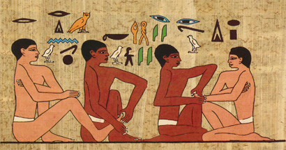
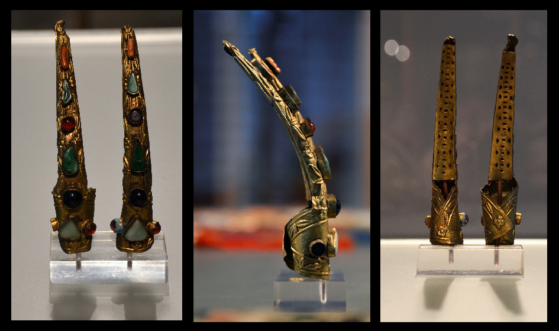
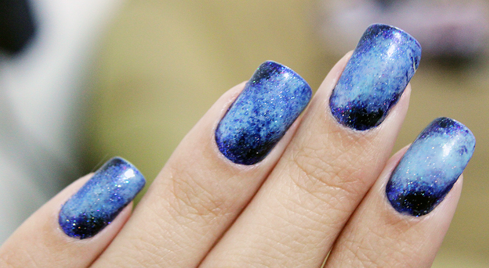
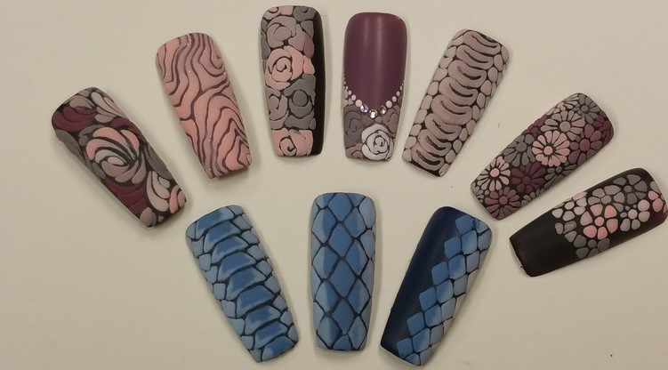

 The exact origin of nail treatments is unclear, since it appears to have originated in different parts of the world around the same time. In ancient Egypt, from 5000 to 3000 BC, women would dye their nails with henna to indicate social status and seductiveness. Women of the lower class wore pastel and neutral shades, while the upper classes wore deep, bright shades. In Babylonia, 3200 BC, men, not women, painted their nails with black and green kohl, an ancient cosmetic. To prepare for war, warriors of Babylon spent hours having their nails prepared, hair curled, and other similar beauty treatments. As in ancient Egypt, nail color indicated one's status, black for noblemen and green for the common man. Around the same time, 3000 BC, the first nail polish originated in ancient China. It was made from beeswax, egg whites, gelatin, vegetable dyes, and gum arabic. Chinese dipped their nails in this mixture for several hours or left it on to dry. Colors ranged from pink to red, depending on the mixture of the ingredients. During the Zhou Dynasty, 600 BC, royalty used this simple nail polish with gold and silver dust on their nails to show their social status.
 The Ming dynasty (1368-1644) was known for extremely long nails. Sometimes, these nails were protected by gold- and jewel-encrusted nail guards. Servants performed personal chores for the royals so their nails did not break or become damaged. Empress Dowager Cixi of China, who ruled from 1835 to 1908, was known for her outrageous nails. Many photos show the empress with 6-inch-long gold guards protecting her long nails. All of the aforementioned did not use nail art as it is widely known today, only stained, dyed, or dusted the fingernails and toenails. The first actual record of nail art was from the short-lived Inca Empire (1438-1533), which at that time was one of the largest empires in South America. Incas decorated their nails by painting eagles on them. In 1770, the first fancy gold and silver manicure sets were created. French King Louis XVI, who ruled from 1774 until his deposition in 1792, always had his nails taken care of using these sets.
In the early 1800s, the modern manicure developed with the invention of the orange stick, a thin wooden stick with one pointy end, usually made from orange wood. It was invented in 1830, by Dr. Sitts, a European podiatrist, who adapted a dental tool for manicure purposes. Previous to this invention, people used acid, a metal rod, and scissors to shape and trim the nails. In 1892, Dr. Sitts' niece invented a nail-care line for women of any social class, which eventually reached United States salons. Prior to then, women had short, almond-shaped nails and often used oils for additional shine or tint. Not long after, in 1907, the first liquid nail polish was invented, although it was colorless. Soon thereafter, it was available in variety of different colors. In 1925, the lunar manicure (today known as the half-moon manicure) was seen everywhere. Reds and pinks were used on the nail bed, while avoiding the area around the cuticles. Then again in 1970s, the natural look was back in fashion and preferred by many women, but only for a short time. The French manicure style was created in Paris in 1976 by Jeff Pink, who was the founder of the Los Angeles-based cosmetic company ORLY. Nail painting came back in vogue in the 1980s and since then has been extremely popular.
The nail-care industry has been growing like never before ever since the invention of modern nail polish. In 2012, the United States witnessed a surging popularity of nail art. in the same year, a short nail-art documentary was released: "NAILgasm". The film explored the growing trend of nail art, from women across the world to high-fashion runways. Mostly women, but also men commonly use YouTube, Instagram, and Pinterest to learn how to do the newest and most interesting designs at home.
In some cultures, nail art can be tied to the concept of femininity and the sense of belonging in a group of females. Nail art is also a way to create its own identity through fashion, using colours and shapes as a disruption of childhood and entering to the female teen/adult world, also leaving the influence of their parents to create their own selves. The nail is also part of the puzzle of mounting the gender identity, the nails for teenagers and adult women represents a piece of the symbol of what is a woman and how the woman should present herself. Though the women use nail art to express their womanliness, the different types of art define as a woman with particular personality, as using French manicure (delicate) or using black nails (aggressive). The trend of metrosexual (term first said in 1994, but became a trend a decade later) men in the 2000s brought to the males also the sensibility of taking care of their hands and nails. As David Beckham, demonstrating how a football player, a husband, and a father could also take care of himself, showed men that they could also invest money and time in appearance and still keep their masculinity.[citation needed] Before the metrosexual trend, the punk subculture used the black nail polish in a “dirty” way to show how rebellious they were against social rules, with the nail polish in a role of showing their disdain to any rules and meant to shock the society.
Nail art’s popularity in media started with printed press with women magazines. It had an important role, but it was not a mainstream fashion trend before the 2000s. After the internet age and the common use of the social media, the trend became major subculture among women. Social media made it easier to connect to the mass audience, and with this, people started to share their designs as a way of their creativity and use the nail as their blank canvas. YouTube, Pinterest, Instagram, Tumblr, and Twitter are the major platforms, which provide many new ideas and designs for the subculture. However, among these, Pinterest is the most important platform for the new beauty trends according to a study.
Manicurists start with the same techniques as for the manicure or pedicure:
Several options are available for decorating nails:
To decorate the nails, manicurists use several tools, such as:
Do-it-yourself (DIY) is a new concept of doing nail art without the aid of experts or professionals. One of the ways of doing a DIY design is by using home tools such as toothpicks, earbuds, cellophane tape, etc., or a tool set with dotted tools, brushes, and nail-art pens.
Bài viết trên đây của Seoul Academy đã giải đáp các thắc mắc về nguồn gốc ra đời của nghệ thuật sơn móng tay tuyệt đẹp. Cùng một số xu hướng mẫu nail hiện đại sắp tới. Hy vọng qua những chia sẻ này, bạn sẽ có thêm nhiều kiến thức bổ ích và ý tưởng mới lạ cho bộ móng của mình thêm đặc biệt nhé.
Some brands try to innovate by creating new kinds of nail polish.